Preserve the reader
Original-source title links, medical flags, events, hot rankings, cloud state and existing daily/weekly editions remain.
SOURCE-GROUNDED IMPLEMENTATION REVIEW · 2026-10-01
The implementation keeps the existing frontier reader and connects it to native 证据专区 and authored evidence. Navigation is limited to 动态、证据专区、简报、关注.
Original-source title links, medical flags, events, hot rankings, cloud state and existing daily/weekly editions remain.
Owned-zone drafts, explicit publication, sources, real authors, neutral peer evaluation, discussion and scoped research use the control plane.
Visible reading details, expandable summaries, account-safe return restoration and a reading-first aggregate follow view replace the concrete earlier defects.
| Evidence | Exact basis | Interpretation |
|---|---|---|
| Implementation source | codex/frontier-evidence-integration-20261001 · baseline 04e8b3509297 | Current workspace source is the implementation reference. Local source links below point to tracked or newly authored files. No merge or push to main, or live production replacement, is implied by this report. |
| Official AIHOT | Pinned official framework ↗ · cf8f8d07d68d | The source snapshot was inspected locally. It demonstrates framework patterns, not the exact code of every hosted deployment. Its license does not authorize copying branding or hosted content. |
| AIHOT live pages | aihot.news ↗ · anonymous captures, 2026-10-01 | The sixteen compared surfaces were inspected. Captured model-news claims were not independently verified; the comparison concerns reading behavior and source code. |
| Legacy EviMed evidence | Owner screenshots and local Vue snapshot; provenance.json records the source evidence | The authenticated legacy service/data was inaccessible in this environment. Its screenshots and Vue calls informed defect identification; they are not a current API contract or a dataset migration source. |
| Native implementation | apps/server/src/evidenceZoneService.mjs ↗ / apps/server/src/evidenceZonePersistence.mjs ↗ | New native PostgreSQL zone/card records have their own authenticated APIs. No old zone, card, expert, reviewer, or private content is implicitly migrated or declared public. |
| Implementation acceptance | Implementation decisions / Browser acceptance record | Exact checks, counts and screenshots belong to the acceptance record. This review does not infer acceptance results from the earlier prototype or claim production deployment or model-quality certification. |
Historical source evidence remains available: provenance, public-site captures, baseline fixture observations, historical prototype checks. Their old test counts and demo state are not implementation acceptance results.
The fourth column classifies this delivered increment. “Excluded” is an intentional product decision, not unfinished promised work.
| Surface | AIHOT reference | Implemented EviMed behavior | Scope decision |
|---|---|---|---|
| 01 · Selected feed | Compact reading groups and source links. Reference capture ↗ | Existing selected feed, clinical flags, safety notices, source labels and account state retained. 阅读详情 and 展开摘要 are visible; titles still open original sources. The mobile hot preview shows at most three rows. | Implemented reading repair; no extra first-party facet or invented inline development data. |
| 02 · All / search | Search, grouping and pagination use a defined scope. Reference capture ↗ | Existing server-backed frontier search remains. Native zone/card search runs over the entire authorized corpus, with matching total and cursor pages from the same query. | Implemented native full-corpus search; loaded rows are not presented as total records. |
| 03 · Hot board | Independent-source activity, decayed heat and comparable-source trends. Reference capture ↗ | Existing current/week/month windows, rank changes and event heat remain available under 动态 → 热榜. | Existing feature retained. Extra heat multipliers and coverage diagnostics are deliberately excluded; heat is not medical certainty. |
| 04 · Event / story | Digest, report timeline, relations and reading-position restoration. Reference capture ↗ | Existing event digest/timeline/relations retained. Related-event navigation preserves the originating feed entry. Query, loaded pages, scroll and expanded summary identifiers are restored using bounded metadata and fresh authenticated reads. | Implemented return restoration; no global account-content cache or copied legacy story data. |
| 05 · Item reading | Readable detail surface with onward links. Reference capture ↗ | The existing frontier detail drawer is exposed by 阅读详情. Native evidence has its own shareable reading route, source quotations, limitations and attributed discussion. | Implemented two explicit reading identities: original news and authored evidence. |
| 06 · Topic directory | Persistent subject collections with stable identity and counts. Reference capture ↗ | Native 证据专区 directory lists published collections or the author's own collections. Search, published evidence totals, follow state and creator authoring use the control plane. | Implemented native zones. 证据专区 is retained as the product name; no legacy data migration is implied. |
| 07 · Topic detail | Defined scope, subject context and paged evidence membership. Reference capture ↗ | A compact zone header leads to its evidence list. Background is disclosed on demand; feedback is a separate action. Owners can draft, edit, publish and withdraw content. | Implemented zone reading and authoring in place; no separate authoring center or fictional experts. |
| 08 · Daily edition | Calendar edition with archive and reading sections. Reference capture ↗ | Existing daily lead, safety/lanes, previous/next/archive and copy remain under 简报 → 日报. Older view=daily and day parameters remain valid. | Reused existing brief storage and navigation; no duplicate report system. |
| 09 · Weekly edition | Period edition with its own archive. Reference capture ↗ | Existing WeeklyView/frontierWeekly remain under 简报 → 周报. Older view=weekly and week parameters remain valid. | Reused existing weekly feature; no promised editorial rewrite or additional model calls. |
| 10 · Monthly edition | Monthly route and archive on the reference site. Reference capture ↗ | No monthly edition is introduced. | Deliberately excluded from this increment; it is not pending delivery. |
| 11 · Saved items | Browser-local saved/read state and import/export. Reference capture ↗ | Existing account-backed frontier saved/read state and save-to-library remain. Native evidence, follows, comments, reviews and feedback enter the account export and account-deletion lifecycle. | Retained cloud persistence. A separate global evidence marketplace or unified saved-ID system is excluded. |
| 12 · Agent / API | Publication rules shared by skill, MCP, RSS and API. Reference capture ↗ | Existing frontier_search seam remains. Native evidence research drafts are authorized and revision-bound on the server, then passed to the existing composer without automatic submission. | Implemented scoped research handoff. Public RSS and a new runtime/orchestration system are excluded. |
| 13 · Mobile navigation | Small destination set and compact mobile reading. Reference capture ↗ | Four primary destinations: 动态 / 证据专区 / 简报 / 关注. Feed modes are compact chips; daily/weekly use in-page tabs. Navigation scrolls horizontally and labels do not wrap vertically. | Implemented restrained navigation using existing tokens and accessible primitives. |
| 14 · Updates / about | Reader changelog and agent migration guidance. Reference capture ↗ | Existing release/operations records remain. This review and its machine-readable acceptance artifacts record the implementation scope. | A new public changelog is deliberately excluded; source review does not claim a production deployment. |
| 15 · Model leaderboard | AI-domain model comparison destination. Reference capture ↗ | No medical equivalent is introduced. | Excluded as unrelated. Study design, peer evaluation, editorial score and heat remain distinct signals. |
| 16 · Tibo/reset monitor | AI-service operations utility adjacent to the feed. Reference capture ↗ | No equivalent is introduced into the medical reading flow. | Excluded as unrelated; the increment serves reading, evidence curation and research handoff. |
The umbrella remains 前沿动态; the durable collection remains 证据专区. 证据卡片 is content inside a zone. Authoring controls appear in the relevant owned zone/card rather than a separate global workbench.
| Primary destination | Contents | Reader's job |
|---|---|---|
| 动态 | 精选 / 热榜 / 全部 / 与我相关 as compact feed-mode chips | Read recent developments, expand their summaries or open original sources. |
| 证据专区 | Published zones, owned zones, evidence membership and internal reading routes | Read persistent evidence or explicitly curate an owned draft from a frontier item. |
| 简报 | 日报 / 周报 and the existing calendar/archive controls | Review a day or week through the existing editions. |
| 关注 | Aggregate existing follows, followed evidence zones/latest cards, management drawer | Resume followed reading before managing subscriptions. |
A news event, a durable zone and an authored evidence card remain separate identities. A news title opens its original source. An evidence card opens the internal reading route, where source links, quotations, limitations, creator, optional peer evaluation and discussion remain available.
Signals stay distinct: editorial score, event heat, peer evaluation and study design are not interchangeable. No evidence grade, expert endorsement, author identity or review average is invented. Peer scoring starts with no selected score; actual attributed reviews are tied to the reviewed content revision.
The existing EviMed design-token palette, PageShell, Buttons, Tabs, FilterChips and Drawer are reused. Secondary context and actions are disclosed on demand. Chinese navigation labels stay on one horizontal row with keyboard access.
| Baseline evidence | Correction in this implementation | Source |
|---|---|---|
| Seven top-level tab labels wrapped vertically on the baseline 390px reader. | Four destinations, nested feed chips, daily/weekly sub-tabs; no-shrink/no-wrap horizontal controls retain keyboard behavior. | apps/web/src/components/frontier/FrontierNavigation.tsx ↗ / apps/web/src/components/ui/Tabs.tsx ↗ |
| Feed summaries were clamped and item details were hidden under the overflow menu. | Visible 阅读详情 reuses the existing drawer; 展开摘要 exposes the full summary. Title → original source remains intact. | apps/web/src/components/frontier/FrontierCard.tsx ↗ |
| The event breadcrumb reset filters and the component-local list cache disappeared on navigation. | Origin query, bounded loaded-page count, scroll and expanded identifiers are retained as navigation metadata; data is fetched fresh under the current account. Old asynchronous listing replies are discarded after changing view. | apps/web/src/app/routes/FrontierPage.tsx ↗ / apps/web/src/app/routes/FrontierEventPage.tsx ↗ |
| Following opened management and required choosing one follow before showing content. | Aggregate follow=all is the default news stream. 管理关注 opens a drawer; individual follows and mute rules retain their existing meaning. Followed evidence zones/latest cards appear in the same destination. | apps/web/src/components/frontier/FollowedEvidenceZones.tsx ↗ / apps/server/src/frontierService.mjs ↗ |
| The legacy snapshot displayed cards.length as total and filtered only its loaded page; owner screenshots showed 87 records versus 共10条. | The native service searches the full authorized corpus and computes matching total plus pages in one transaction. This repairs the native experience; the frozen/legacy service and its data are not modified or migrated. | apps/server/src/evidenceZoneService.mjs ↗ / apps/web/src/app/routes/EvidenceZonePage.tsx ↗ |
| Legacy expert/background/feedback blocks delayed the evidence list; 向专区提问 actually submitted feedback. | Compact zone context, optional background disclosure and a separate 给专区提建议 action. 问这个专区 / 问这条证据 prepare authorized research drafts in the established composer. | apps/web/src/app/routes/EvidenceZonePage.tsx ↗ / apps/web/src/app/routes/EvidenceReadingPage.tsx ↗ |
| The legacy creator fallback named a professional team when creator data was absent. A review form defaulted to4.5; that draft default was not proof of a fabricated published average. | Native creator/reviewer identity comes from authenticated records; no flattering score is preselected. Public rendering shows actual revision-bound peer evaluations and never invents an aggregate. | apps/web/src/components/frontier/EvidenceReading.tsx ↗ / apps/server/src/evidenceZoneService.mjs ↗ |
Historical evidence: baseline mobile fixture, owner legacy header, owner legacy count/list. These captures document the earlier state.
The transfer is selective: publication, corpus scope, reading state and source identity. Existing medical event logic, runtime, account storage and usage accounting remain authoritative.
| Area | Official AIHOT source | Observed pattern | Implemented decision | Native source |
|---|---|---|---|---|
| A · Publication policy | packages/backend/src/publication/rules.ts ↗ | Read visibility and publication rights are explicit predicates. | Native reads require a visible zone and card; a published card inside a private zone stays private. Mutations check the authenticated creator and expected revision. | apps/server/src/evidenceZoneService.mjs ↗ |
| B · Curated collections | packages/backend/src/publication/topics.ts ↗ | Stable collection identity, membership, counts and paging. | Native zone/card identity and membership are stored in PostgreSQL. Existing lexical topic follows keep their original meaning; evidence-zone follows are separate. | apps/server/src/evidenceZonePersistence.mjs ↗ |
| C · Event semantics | packages/backend/src/events/relate.ts ↗ | Occurrence, story, unrelated item and roundup are distinct. | Existing medical event classification and relations are retained. This increment does not alter clinical merge thresholds. | apps/server/src/frontierEvents.mjs ↗ |
| D · Grouping safeguards | packages/backend/src/events/group.ts ↗ | Bounded recall and standalone fallback prevent over-grouping. | Existing grouping stays intact. No mandatory human approval gate is added to autonomous delivery. | apps/server/src/frontierEvents.mjs ↗ |
| E · Query projection | packages/backend/src/publication/timeline.ts ↗ | Representatives, hydration and grouping share one scope. | Native visibility, search predicate, matching total and cursor fingerprint are evaluated in one repeatable-read transaction, not against only the first browser page. | apps/server/src/evidenceZoneService.mjs ↗ |
| F · Reading groups | apps/web/app/features/feed/ReadingGroup.tsx ↗ | Secondary reading is revealed on demand with defined state. | Existing drawers are exposed; summaries can expand. 整理为证据卡片 links a news item to an owned-zone draft with a validated source identity, without automatic publication. | apps/web/src/components/frontier/FrontierCard.tsx ↗ |
| G · Return restoration | apps/web/app/features/feed/restore.ts ↗ | History-entry metadata restores the reader's position. | Bounded query/page/scroll/expansion metadata is attached to the history entry. Data is re-fetched through authenticated APIs; no cross-account content cache is introduced. | apps/web/src/components/frontier/frontierReadingState.ts ↗ |
| H · Intent prefetch | apps/web/app/components/ui/IntentLink.tsx ↗ | Prefetch begins only after a short reader-intent delay. | Deliberately excluded. Existing request clients and scope guards are used; stale replies are discarded after route/query changes. | apps/web/src/components/frontier/useEvidenceScope.ts ↗ |
| I · Heat reliability | packages/backend/src/events/hot.ts ↗ | Heat and observation-clock coverage are separate concerns. | Existing medical hot rankings remain. Fancy heat calculations are excluded and no popularity signal is described as evidence quality. | apps/web/src/components/frontier/FrontierHot.tsx ↗ |
| J · Editorial calibration | packages/backend/src/editorial/analyze.ts ↗ | Scoring and structure extraction have explicit costs and thresholds. | Existing editorial/number-checking implementation is retained. No extra scoring calls or editorial workstation are delivered or promised here. | apps/server/src/frontierEditor.mjs ↗ |
| K · Report composition | packages/backend/src/reports/compose.ts ↗ | Calendar windows, deduplication and publication scope are explicit. | Existing daily/weekly storage is reused. Monthly composition and an editorial rewrite are excluded from this increment. | apps/server/src/frontierWeekly.mjs ↗ |
| L · Report layout | apps/web/app/features/report/ReportLayout.tsx ↗ | Shared report layout supports archive and mobile reading. | Simplified 简报 navigation uses existing DailyIssue/WeeklyView and shared tokens. The top-level destination count stays four. | apps/web/src/components/frontier/DailyView.tsx ↗ |
| M · Saved/read state | apps/web/app/lib/local-state.ts ↗ | Browser state supports anonymous preferences on the reference site. | EviMed retains account persistence. Native evidence-related user records are exported by user scope, with database deletion cascades. | apps/server/src/accountExport.mjs ↗ |
| N · Provider receipts | packages/backend/src/providers/receipts.ts ↗ | Logical work and accounting distinguish content from spend records. | Existing reserve/settle usage and runtime boundaries remain. Research opens the established composer with an authorized draft; it does not create parallel billing or automatically send a model request. | apps/server/src/evidenceZoneRoutes.mjs ↗ |
Additional pinned source context: docs/architecture.md ↗, apps/web/app/features/feed/session-cache.ts ↗, packages/backend/src/publication/followups.ts ↗, packages/backend/src/editorial/prompts.ts ↗.
| Boundary | Implemented contract | Source |
|---|---|---|
| News → evidence | 整理为证据卡片 selects an owned zone and opens an author-editable draft. The server validates the published/enabled frontier source identity. Saving a draft never implicitly publishes it or assigns a peer review. | apps/web/src/components/frontier/EvidenceEditors.tsx ↗ / apps/server/src/evidenceZoneService.mjs ↗ |
| Visibility and ownership | Session authentication, audience policy and CSRF guard the native routes. Drafts are owned; a published card requires its zone to be published for another reader. Author identity is not accepted from user payloads. | apps/server/src/evidenceZoneRoutes.mjs ↗ / apps/server/src/server.mjs ↗ |
| Publication and peer evaluation | Explicit save/publish/withdraw controls use expected revisions. Publication checks content and sources; peer evaluations bind actual accounts to the reviewed revision. Creator self-review is rejected. | apps/server/src/evidenceZoneService.mjs ↗ |
| Full-corpus discovery | Search applies to the authorized collection before total and cursor paging. Cursor scope includes account, filters and content version; count is never derived from browser-loaded rows. | apps/server/src/evidenceZoneService.mjs ↗ / apps/web/src/lib/evidenceZoneClient.ts ↗ |
| Feedback versus research | Zone feedback is delivered to its owner. Public card discussion remains attributed. Research handoff resolves authorized identities/revisions server-side and opens a draft, without automatic model submission. | apps/web/src/app/routes/EvidenceReadingPage.tsx ↗ / apps/server/src/evidenceZoneService.mjs ↗ |
| Source safety and lifecycle | Source links accept HTTP/HTTPS without credentials; imported text is rendered as text. Native user records participate in account export and deletion cascades. Browser caches do not become a new record store. | apps/web/src/components/frontier/EvidenceReading.tsx ↗ / apps/server/src/accountExport.mjs ↗ |
| Compatibility | Existing frontier/event routes and selected/hot/all/foryou/daily/weekly/following URL values remain valid. Native zone/card routes extend the hosted web boundary; no archived Java work or second agent kernel is added. | apps/web/src/app/routes/FrontierPage.tsx ↗ / apps/web/src/app/router.tsx ↗ |
| Feature | Decision for this increment |
|---|---|
| Extra first-party-only facet | Excluded. Existing source/study labels and event primary-source context remain; another filter dimension does not improve the defined reading journey. |
| Fancy heat and additional model scoring | Excluded. Existing rankings are reused, with no AI-industry multipliers, extra scoring calls or asserted source-comparable trend accuracy. |
| Editorial workstation and public RSS | Excluded. Existing operations/API boundaries remain; a new workstation and public redistribution channel would add separate operational and rights scope. |
| Separate global evidence destination / authoring workbench | Excluded. Evidence reading and authoring live inside 证据专区, keeping four destinations rather than duplicating navigation. |
| Monthly editions, model leaderboard, reset monitor and prefetch layer | Excluded. They are not required for this medical evidence increment and are not a pending delivery roadmap. |
Captures use the implemented hosted interface and explicit acceptance records. The earlier proposal screenshots are historical and superseded. These links identify the feed, owned/public zone reading and evidence-card reading at the required viewport widths.
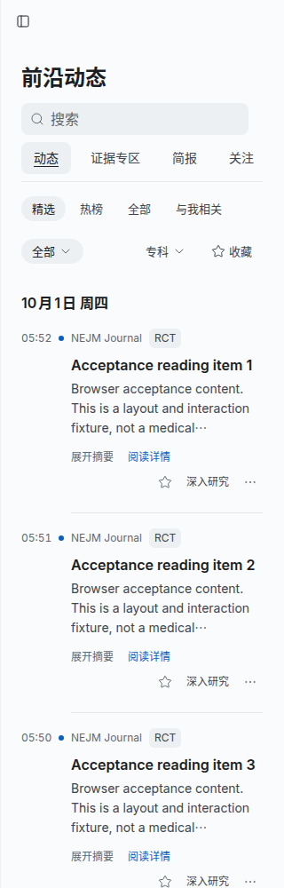
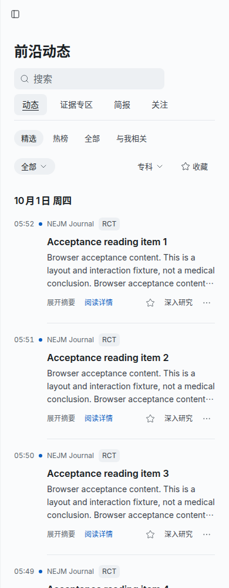
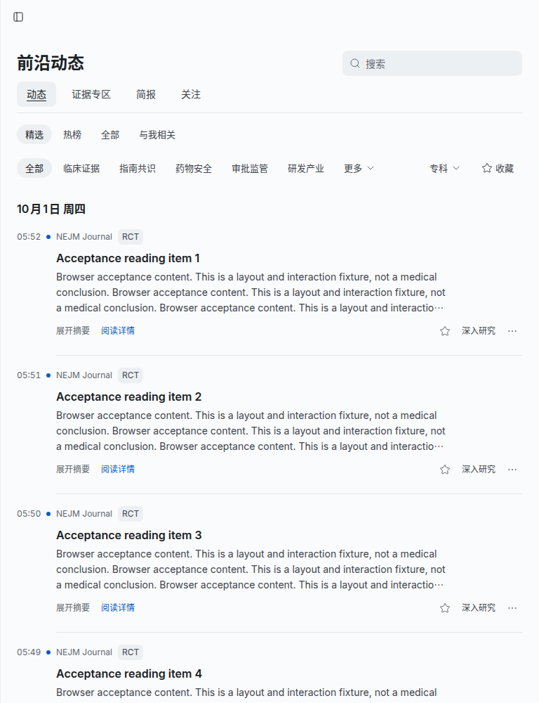
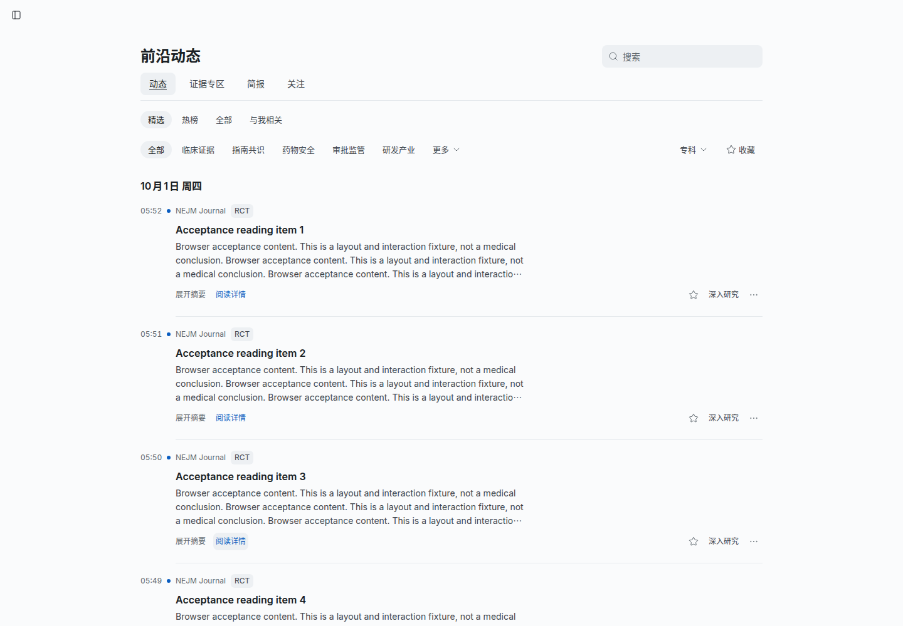
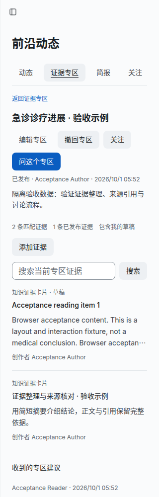
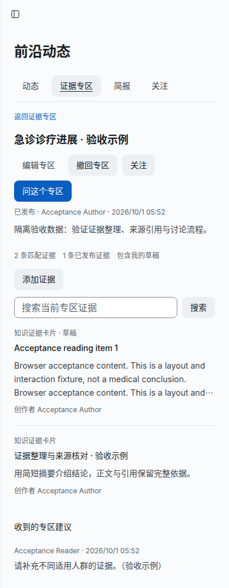
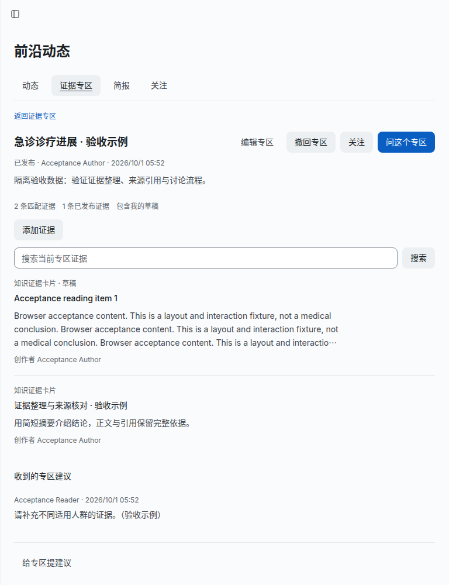
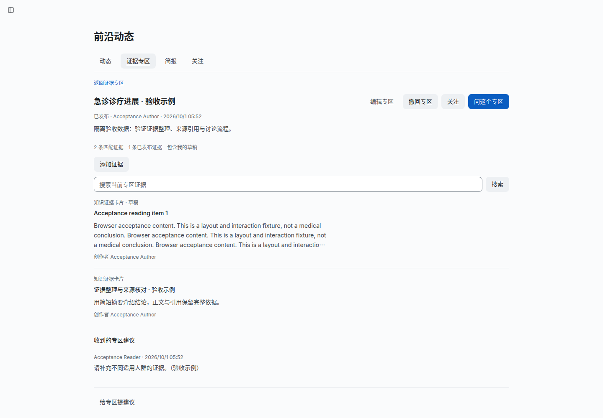
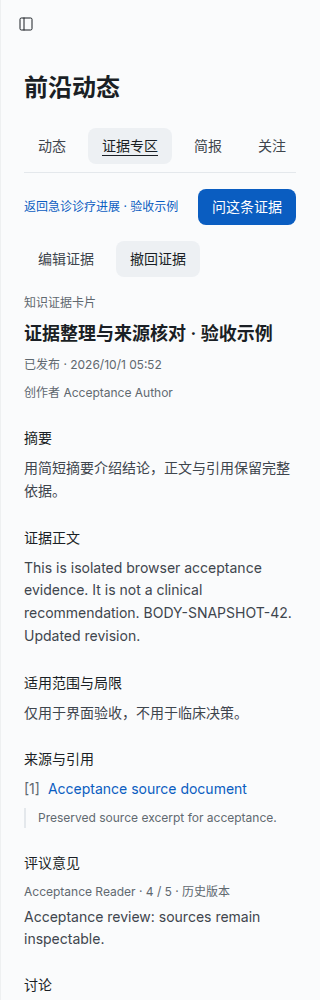
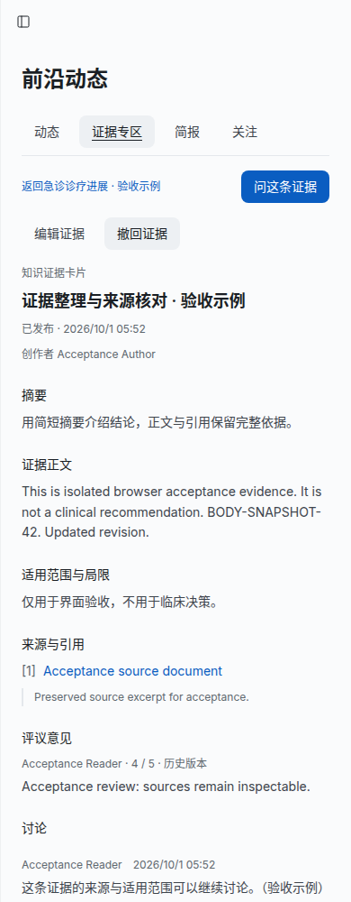
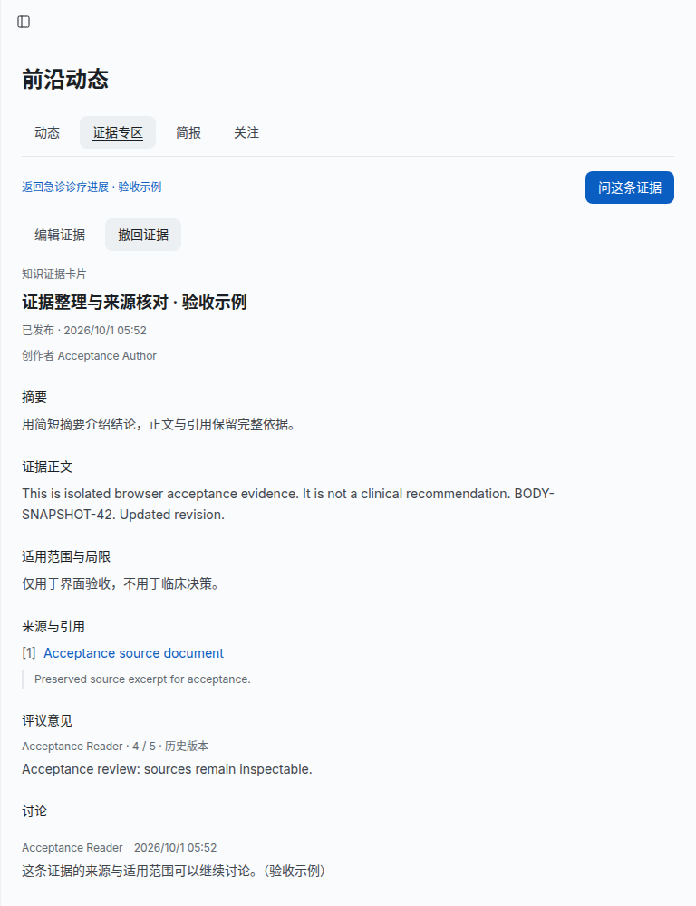
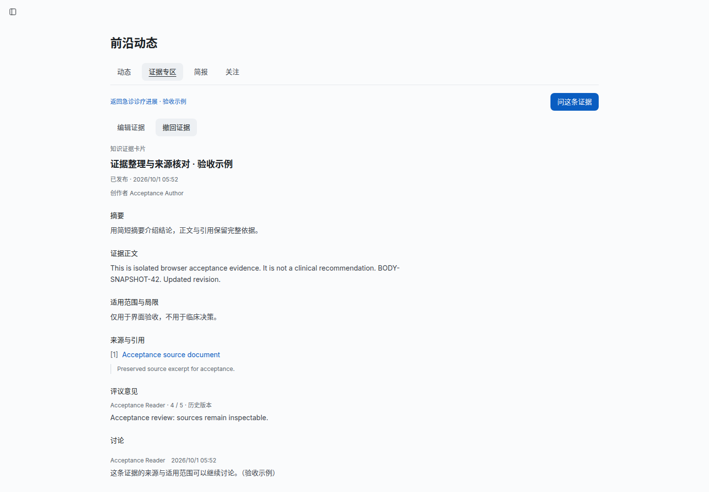
Final acceptance: 1,456 web tests, 309 frontier/evidence PostgreSQL checks (zero skipped), and 36 browser checks passed. Type checks, lint, production build and source-credential audit passed. Delivery verification records commands and boundaries; 20 native lifecycle/layout checks and 16 reader checks retain observed results.
implementation-plan.json records final naming and scope. Screenshots use explicitly labeled isolated acceptance records. The historical prototype's checks are not reused as implemented-product results.
The acceptance boundary includes real native login/HTTP/PostgreSQL persistence; owned versus public visibility; draft/edit/publish/withdraw; source-linked feed drafts; neutral attributed review; feedback and discussion; whole-corpus search and exact matching totals; following; revision-bound research handoff; return restoration; and 320/390/768/1440px reading. Automated checks and independent source review complement browser acceptance.
The browser verified that authorized research content reaches the existing chat-frame navigation contract as an unsent draft. The established frame bridge is covered by its component tests; this isolated acceptance did not start a live model or claim a generated research result.
Local acceptance does not imply a push or merge into main, production replacement, legacy-content migration or clinical model-quality certification. The previous small editorial regression corpus is not a measured production accuracy rate.